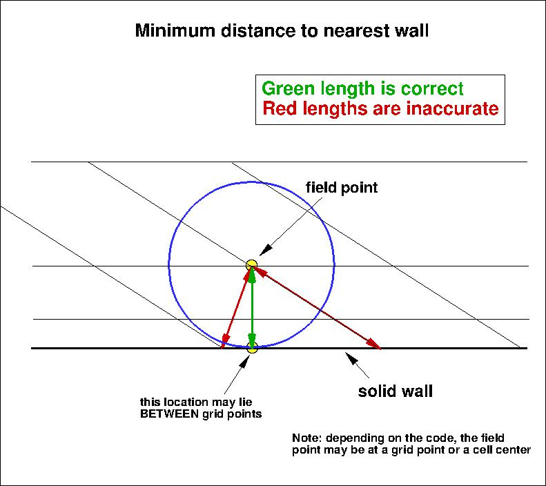
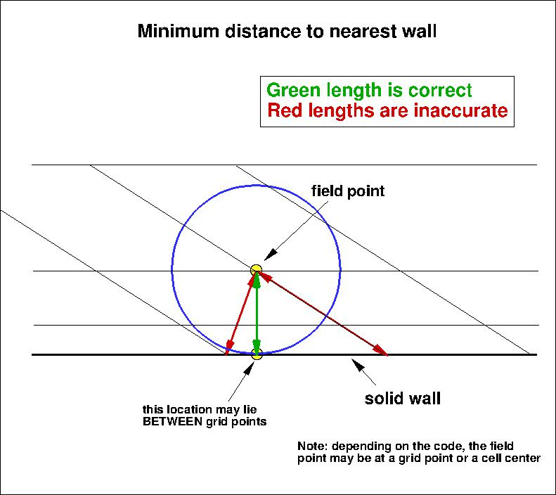

Results are shown here from 2 compressible codes
so that the user may compare their own compressible code results. Multiple grids were
used so the user can see trends with grid refinement. Different codes will behave
differently with grid refinement depending on many factors (including code order of accuracy
and other numerics),
but it would be expected that as the grid is refined the results
will tend toward an "infinite grid" solution that is the same.
Be careful when comparing details: any differences in boundary conditions or flow conditions
may affect results.
Two independent compressible RANS codes,
CFL3D and FUN3D, were used to compute this
2-D airfoil near-wake case with the Spalart-Allmaras turbulence model
(version SA - see full description on
Spalart-Allmaras page). The full series of 5 grids were used.
CFL3D is a cell-centered structured-grid code, and FUN3D
is a node-centered unstructured-grid code (FUN3D can solve on mixed element grids, so this case
was computed on the same hexahedral grid used by CFL3D). Both codes used Roe's Flux Difference
Splitting and a UMUSCL upwind approach. In CFL3D its standard UMUSCL (kappa=0.33333) scheme was
used, whereas in FUN3D the option UMUSCL 0.5 was used. Both codes were run with
full Navier-Stokes (as opposed to thin-layer, which is CFL3D's default mode of operation),
and both codes used first-order upwinding for the advective terms of the turbulence model.
Details about the codes can be found on their respective websites,
the links for which are given on this site's
home page.
The codes were not run to machine-zero iterative convergence, but an attempt was made to converge
sufficiently so that results of interest were well within normal engineering tolerance and
plotting accuracy. For example, for CFL3D the density residual was typically
driven down below 10-11. It should be kept in mind that many of the files given below
contain computed values directly from the codes,
using a precision greater than the convergence tolerance (i.e., the values
in the files are not necessarily as precise as the number of digits given).
For the CFL3D and FUN3D tests reported below, the turbulent inflow boundary condition used for SA was:
 .
In CFL3D, this was not the default setting, so a special keyword needed to be
set.
For the interested reader, typical input files for this problem are given here:
.
In CFL3D, this was not the default setting, so a special keyword needed to be
set.
For the interested reader, typical input files for this problem are given here:
CFL3D V6.7:
FUN3D:
The following plots show the airfoil lift coefficient, drag coefficient, pressure drag coefficient,
and viscous drag coefficient.
In the plot the x-axis is plotting 1/N1/2, which is proportional to
grid spacing (h).
At the left of the plot, h=0 represents an infinitely fine grid.
Both codes go toward approximately the same integrated result on an infinitely refined grid.
Using the uncertainty estimation procedure from the Fluids Engineering Division of the ASME (Celik, I. B.,
Ghia, U., Roache, P. J., Freitas, C. J., Coleman, H., Raad, P. E.,
"Procedure for Estimation and Reporting of Uncertainty Due
to Discretization in CFD Applications," Journal of Fluids Engineering, Vol. 130, July 2008, 078001, https://doi.org/10.1115/1.2960953), described in Summary of Uncertainty Procedure,
the finest 3 grids yield the following:
| Code |
Computed apparent order, p |
Approx rel fine-grid error, ea21 |
Extrap rel fine-grid error, eext21 |
Fine-grid convergence index, GCIfine21 |
| CL |
| CFL3D |
0.83 |
0.358% |
0.463% |
0.575% |
| FUN3D |
0.83 |
0.108% |
0.139% |
0.174% |
| CD |
| CFL3D |
2.49 |
0.172% |
0.037% |
0.047% |
| FUN3D |
2.63 |
0.243% |
0.047% |
0.058% |
| CD,p |
| CFL3D |
2.72 |
0.808% |
0.144% |
0.180% |
| FUN3D |
2.91 |
1.303% |
0.201% |
0.251% |
| CD,v |
| CFL3D |
1.62 |
0.058% |
0.028% |
0.035% |
| FUN3D |
negative |
0.053% |
N/A |
N/A |
The data file that generated the above plots is given here:
force_convergence_sa.dat (revised 8/3/2017).
The following plot shows the u-velocity in the wake on the finest grid at various locations downstream
of the airfoil trailing edge. It gives an overview of all velocity profiles, with
experiment shown for reference only. The two codes CFL3D and FUN3D agree to within plotting accuracy.
The data file that generated the CFD results in above plot is given here:
vel_data_C+F_sa.dat.
The experimental data can be found on the
2DANW: 2D Airfoil Near-Wake page.
Using the CFD wake profiles for all grid levels, the following plots show convergence of the
minimum u-velocity in the wake at particular x-stations as a function of grid density.
The minimum u-velocity is seen to increase with increasing grid refinement
for both codes. Again, the two codes approach approximately the same results as the grid is uniformly refined.
Using the uncertainty estimation procedure from the Fluids Engineering Division of the ASME (Celik, I. B.,
Ghia, U., Roache, P. J., Freitas, C. J., Coleman, H., Raad, P. E.,
"Procedure for Estimation and Reporting of Uncertainty Due
to Discretization in CFD Applications," Journal of Fluids Engineering, Vol. 130, July 2008, 078001, https://doi.org/10.1115/1.2960953), described in Summary of Uncertainty Procedure,
the finest 3 grids yield the following results:
| Code |
Computed apparent order, p |
Approx rel fine-grid error, ea21 |
Extrap rel fine-grid error, eext21 |
Fine-grid convergence index, GCIfine21 |
| Min u/uref at x/c=1.01 |
| CFL3D |
1.39 |
0.206% |
0.127% |
0.159% |
| FUN3D |
2.04 |
0.212% |
0.068% |
0.085% |
| Min u/uref at x/c=1.05 |
| CFL3D |
1.41 |
0.167% |
0.101% |
0.127% |
| FUN3D |
1.63 |
0.118% |
0.056% |
0.070% |
| Min u/uref at x/c=1.20 |
| CFL3D |
1.19 |
0.173% |
0.135% |
0.168% |
| FUN3D |
1.10 |
0.141% |
0.122% |
0.153% |
| Min u/uref at x/c=1.40 |
| CFL3D |
1.06 |
0.173% |
0.161% |
0.201% |
| FUN3D |
0.94 |
0.162% |
0.177% |
0.222% |
| Min u/uref at x/c=1.80 |
| CFL3D |
1.07 |
0.145% |
0.132% |
0.165% |
| FUN3D |
0.95 |
0.156% |
0.168% |
0.211% |
| Min u/uref at x/c=2.19 |
| CFL3D |
1.10 |
0.119% |
0.104% |
0.131% |
| FUN3D |
1.00 |
0.139% |
0.139% |
0.174% |
| Min u/uref at x/c=3.00 |
| CFL3D |
1.12 |
0.087% |
0.075% |
0.094% |
| FUN3D |
1.02 |
0.112% |
0.109% |
0.137% |
The data file that generated the above plots is given here:
velmin_convergence_sa.dat (revised 8/3/2017).
The following plot shows the turbulent shear stress in the wake on the finest grid at various locations downstream
of the airfoil trailing edge. It gives an overview of all u'v' profiles, with
experiment shown for reference only. The two codes CFL3D and FUN3D agree to within plotting accuracy.
The data file that generated the CFD results in above plot is given here:
upvp_data_C+F_sa.dat.
The experimental data can be found on the
2DANW: 2D Airfoil Near-Wake page.
Using the CFD wake profiles for all grid levels, the following plots show convergence of the
minimum u'v' in the wake at particular x-stations as a function of grid density.
The two codes approach approximately the same results as the grid is uniformly refined.
Using the uncertainty estimation procedure from the Fluids Engineering Division of the ASME (Celik, I. B.,
Ghia, U., Roache, P. J., Freitas, C. J., Coleman, H., Raad, P. E.,
"Procedure for Estimation and Reporting of Uncertainty Due
to Discretization in CFD Applications," Journal of Fluids Engineering, Vol. 130, July 2008, 078001, https://doi.org/10.1115/1.2960953), described in Summary of Uncertainty Procedure,
the finest 3 grids yield the following results:
| Code |
Computed apparent order, p |
Approx rel fine-grid error, ea21 |
Extrap rel fine-grid error, eext21 |
Fine-grid convergence index, GCIfine21 |
| Min u'v'/uref2 at x/c=1.01 |
| CFL3D |
0.56 |
0.399% |
0.834% |
1.051% |
| FUN3D |
0.41 |
0.347% |
1.060% |
1.009% |
| Min u'v'/uref2 at x/c=1.05 |
| CFL3D |
0.77 |
0.774% |
1.089% |
1.376% |
| FUN3D |
0.48 |
0.659% |
1.640% |
1.971% |
| Min u'v'/uref2 at x/c=1.20 |
| CFL3D |
0.60 |
1.195% |
2.285% |
2.922% |
| FUN3D |
0.64 |
1.390% |
2.418% |
3.097% |
| Min u'v'/uref2 at x/c=1.40 |
| CFL3D |
0.99 |
0.677% |
0.683% |
0.860% |
| FUN3D |
1.05 |
1.015% |
0.944% |
1.191% |
| Min u'v'/uref2 at x/c=1.80 |
| CFL3D |
3.44 |
0.011% |
0.001% |
0.163% |
| FUN3D |
1.26 |
0.283% |
0.202% |
0.253% |
| Min u'v'/uref2 at x/c=2.19 |
| CFL3D |
2.02 |
0.214% |
0.070% |
0.088% |
| FUN3D |
oscillatory convergence |
0.030% |
N/A |
N/A |
| Min u'v'/uref2 at x/c=3.00 |
| CFL3D |
1.89 |
0.295% |
0.109% |
0.137% |
| FUN3D |
2.20 |
0.126% |
0.035% |
0.044% |
The data file that generated the above plots is given here:
upvpmin_convergence_sa.dat (revised 8/3/2017).
The surface pressure coefficient and skin friction coefficient from both codes on the finest 2241 x 385 grid
are shown in the next two plots. There is some non-smooth behavior as a result of non-smoothness in the
airfoil shape, particularly near the airfoil leading edge
(as defined by the existing grids). However, the two codes are using identical grids, and
agree well with each other on the finest grid.
The data files that generated the above plot are given here:
cp_airfoilwakecase_sa.dat,
cf_airfoilwakecase_sa.dat.
The eddy viscosity contours (nondimensionalized by freestream laminar viscosity)
from the two codes on the finest 2241 x 385 grid are shown
in the following plots. They are essentially indistinguishable.
(Note legends do not necessarily reflect min and max values.)
The data files that generated the above plots are given here:
mut_contours_cfl3d_sa.dat.gz (17.0 MB) (structured, at cell centers) and
mut_contours_fun3d_sa.dat.gz (24.9 MB) (unstructured, at grid points). Note
that these are both gzipped
Tecplot
formatted files, so you must either have Tecplot or know how to read their format in order to use these
files.
The SA model relies on the minimum distance to the nearest wall. For this case,
contours of this function
are shown in the following plot, for the finest grid.
Note that behind the airfoil, the distance is measured to the nearest wall (on the airfoil), and not to
the wake line.

The data file that generated the above plot is given in
airfoil_mindist500c.dat.gz (gzipped file,
25.5 MB, unstructured, at grid points). Note
that this is a gzipped Tecplot
formatted file, so you must either have Tecplot or know how to read their format in
order to use it.
It is important to note that computing minimum distance by searching along grid lines is
incorrect, and is not the same as computing actual minimum distance to the nearest wall for this grid. Using
the former method will yield differences in the results. The following sketches
demonstrate the concept of minimum distance. Improperly-calculated minimum distance
functions will particularly produce incorrect results for cases in which the
grid lines are not perfectly normal to the body surface.
Note that when the nearest wall point is a sharp convex corner or edge (like an airfoil or wing trailing edge) then the
correct minimum distance is the distance to that corner or edge, which is not a wall normal.
 

Results from TAU and REFRESCO are shown alongside the CFL3D and FUN3D results below (note that SA-neg is effectively the same model as SA). All four
codes approach approximately the same solution as the grid is refined.
Note for users of OpenFOAM.
Return to: 2D Airfoil Near-Wake Verification Case Intro Page
Return to: Turbulence Modeling Resource Home Page
Recent significant updates:
11/27/2024 - added REFRESCO results
08/03/2017 - corrected numbers associated with grid sizes for grid convergence data; added TAU results
Page Curators: Christopher Rumsey,
Ethan Vogel,
Clark Pederson
Last Updated: 11/27/2024